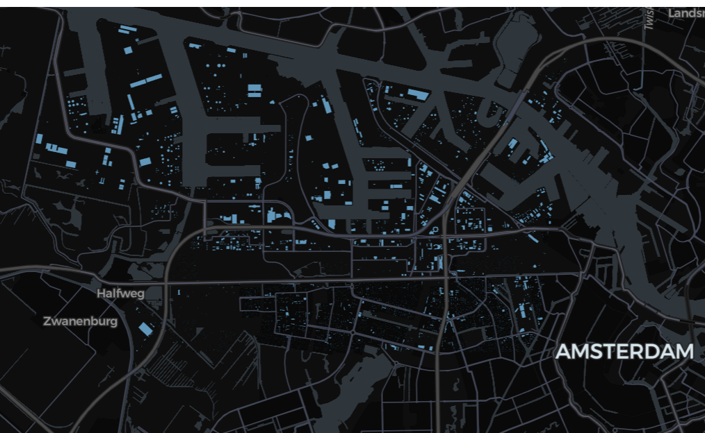
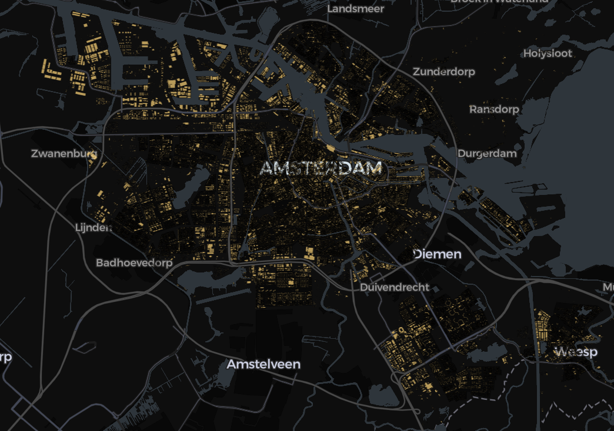

Databricks Native ST geospatial functions
Databricks SQL includes a large number of ST geospatial functions for large-scale, native processing of geodata. Just a few examples:
Setup
GEOGRAPHY operations
You can use st_area, st_length and st_perimeter directly on GEOGRAPHY (lon/lat) columns to get results in meters:
This example uses the CARTO/Overture Maps datasets that you can add to your workspace via the Marketplace.
The CARTO/Overture Maps tables are stored in us-west-2 as of writing, so if you are not using Databricks Free Edition and you are in any other region, you will have to pay egress charges based on the amount of data you read.
%sql
-- Areas of countries. Note that a country might not be listed if they cross the date line, leading to either missing geometry in the CARTO dataset already, or unsupported coordinates for `st_geogfromwkb` (hence the use of `try_to_geography`)
select
country,
names:primary name,
st_area(try_to_geography(geometry)) / 1e6 area_km2
from
carto_overture_maps_divisions.carto.division_area
where
subtype = 'country'
and class = 'land'
order by
area_km2 desc
-- Returns:
-- country name area_km2
-- CA """Canada""" 9966895.526025355
-- US """United States""" 9476994.623136332
-- CN """中国""" 9390439.241133066
-- BR """Brasil""" 8507809.984099092
-- IN """India""" 3149764.8857977577
-- ...If you store (lon, lat) point data as GEOGRAPHY, you can calculate distance in meters by converting to GEOMETRY(4326) first:
%sql
with cities as (
select
names:primary::string as name,
st_geogfromwkb(geometry) geog
from
carto_overture_maps_divisions.carto.division
where
subtype = 'locality'
and class = 'city'
-- just to speed up the lookup
and `__carto_xmax` between - 1.41 and 2.99
and `__carto_ymax` between 48.57 and 52.21
),
london as (
select
*
from
cities
where
name = "London"
),
paris as (
select
*
from
cities
where
name = "Paris"
)
select
st_distancespheroid(london.geog::geometry(4326), paris.geog::geometry(4326)) / 1e3 dist_km
from
london,
paris
--
-- Returns:
--
-- dist_km
-- 344.08532856606695GEOMETRY operations
We can also calculate the distance in meters between two GEOMETRY lon-lat polygons (i.e. not just between points) if we transform to an appropriate local Cartesian coordinate system first:
%sql
with dutch_provinces as (
select
names:primary::string as name,
-- 28992 is the SRID of the Dutch local Cartesian coordinate system:
-- https://epsg.io/28992
st_transform(st_geomfromwkb(geometry, 4326), 28992) geom_rd
from
carto_overture_maps_divisions.carto.division
where
subtype = 'region'
and country = 'NL'
),
noord_holland as (
select
*
from
dutch_provinces
where
name = "Noord-Holland"
),
noord_brabant as (
select
*
from
dutch_provinces
where
name = "Noord-Brabant"
)
select
st_distance(noord_holland.geom_rd, noord_brabant.geom_rd) / 1e3 dist_km
from
noord_holland,
noord_brabant
--
-- Returns:
--
-- dist_km
-- 131.66041515751186If you want to find the actual shortest line as well, not just the distance, see how to define UDFs with DuckDB.
Spatial join
Optimizing for efficient spatial joins is out of scope here – you’d need to use some spatial indexing such as H3. (Databricks might add support to spatial joins of GEOMETRY/GEOGRAPHY types over time, but as of Aug 2025, using an explicit spatial index is highly benefitial.)
We were using the Delta Lake tables of Overture Maps provided by CARTO as our examples. Notice that these are clustered by the __carto_[x|y][min|max] columns:
So in the case of these tables, we can make use of these columns for efficient joins, filtering for bounding boxes before calling st_contains (or st_intersects) for a precise join.
Let’s fetch all buildings of Amsterdam:
%sql
-- capture the city bbox in a table
create or replace table tmp_ams as
select
st_geomfromwkb(geometry) geometry,
`__carto_xmin`,
`__carto_xmax`,
`__carto_ymin`,
`__carto_ymax`
from
carto_overture_maps_divisions.carto.division_area
where
country = 'NL'
and subtype = 'county'
and names:primary::string = "Amsterdam"We’ll fetch the bbox values from above to inject into the SQL query below – yes, it would be way more elegant to avoid hardcoding and use a join, but as of current testing, this is way faster.
bbox = spark.table("tmp_ams").toPandas().iloc[0,]
spark.sql(f"""create or replace table tmp_ams_buildings_bbox as
select
building.* except (geometry),
st_geomfromwkb(building.geometry) building_geometry
from
-- first approximate join on bounding boxes
carto_overture_maps_buildings.carto.building
where
building.__carto_xmin between {bbox["__carto_xmin"]} and {bbox["__carto_xmax"]}
and building.__carto_ymin between {bbox["__carto_ymin"]}
and {bbox["__carto_ymax"]}""")Now we can filter with st_contains to leave out the false positives:
def spark_viz(df, wkb_col="geometry", other_cols=None, limit=10_000, output_html=None):
# needs `%pip install duckdb lonboard shapely`
if other_cols is None:
other_cols = []
import duckdb
from lonboard import viz
try:
duckdb.load_extension("spatial")
except duckdb.duckdb.IOException:
duckdb.install_extension("spatial")
duckdb.load_extension("spatial")
dfa = df.select([wkb_col] + other_cols).limit(limit).toArrow()
if dfa.num_rows == limit:
print(f"Data truncated to limit {limit}")
query = duckdb.sql(
f"""select * replace (st_geomfromwkb({wkb_col}) as {wkb_col})
from dfa
where {wkb_col} is not null"""
)
if output_html is None:
return viz(query).as_html()
else:
viz(query).to_html(output_html)
return output_html
If you want to see a much larger sample (or possibly the whole dataset), you’ll need to output to a HTML into Volumes, and either download the file and open it locally, or use a Databricks App such as this html-viewwer example:
